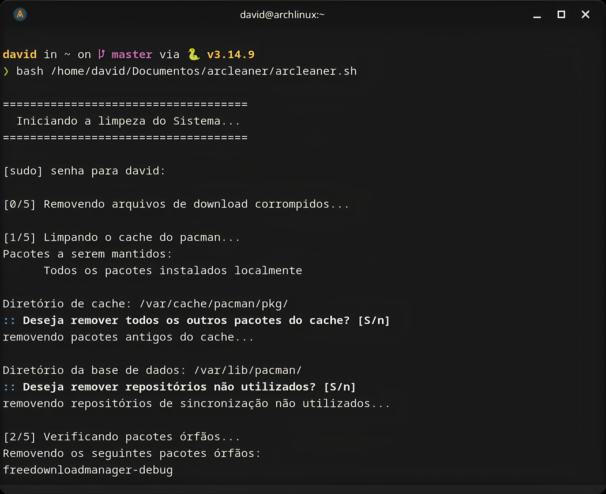
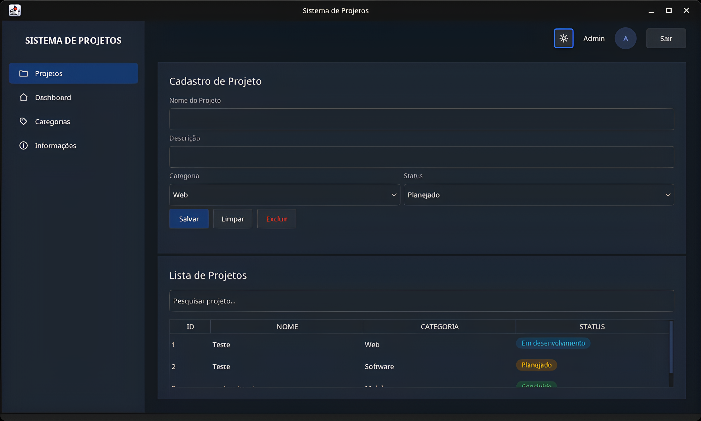

Sobre Mim
Estudante de Análise e Desenvolvimento de Sistemas na Fatec Carapicuíba, com interesse em desenvolvimento back-end e infraestrutura de servidores.
Estou no início da minha jornada na tecnologia, construindo uma base sólida em lógica de programação e desenvolvimento. Busco oportunidades de estágio onde possa aplicar o que estou aprendendo e crescer junto com uma equipe técnica.
Sou fascinado por tecnologia desde cedo e hoje direciono esse interesse para back-end com Java e infraestrutura Linux. Na prática, estou desenvolvendo o ArCleaner, um script em Bash que automatiza a manutenção de sistemas baseados em Arch Linux, e um CRUD com API para praticar a integração entre back-end e front-end.
Habilidades
Meus Projetos
ArCleaner (em desenvolvimento)
Script em Bash para Arch Linux que automatiza a manutenção do sistema: limpa o cache e downloads corrompidos do pacman, remove pacotes órfãos, reduz logs antigos do systemd e executa o fstrim (TRIM) para informar ao SSD quais blocos estão livres.
Sistema de Projetos (Full-Stack & Desktop)
Aplicação integrada em Java 21 (Maven) com API REST em Javalin e persistência em CSV. Conecta um cliente desktop e uma interface web responsiva com autenticação e dashboard. Ver repositório.


Portfólio Pessoal
Projeto destinado a ser meu portfólio web.
Meus Hobbies
Galeria dos meus hobbies